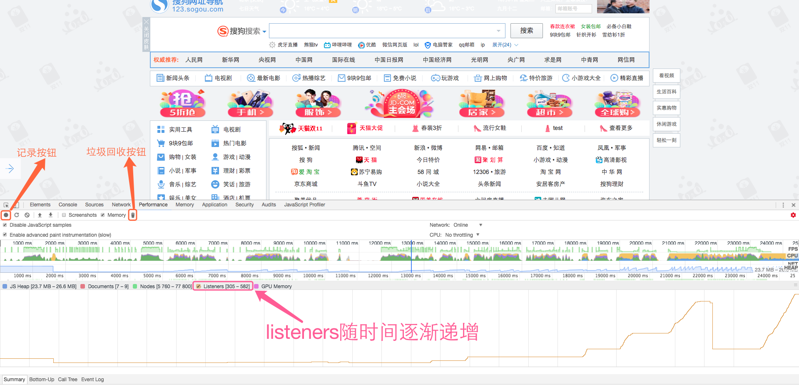
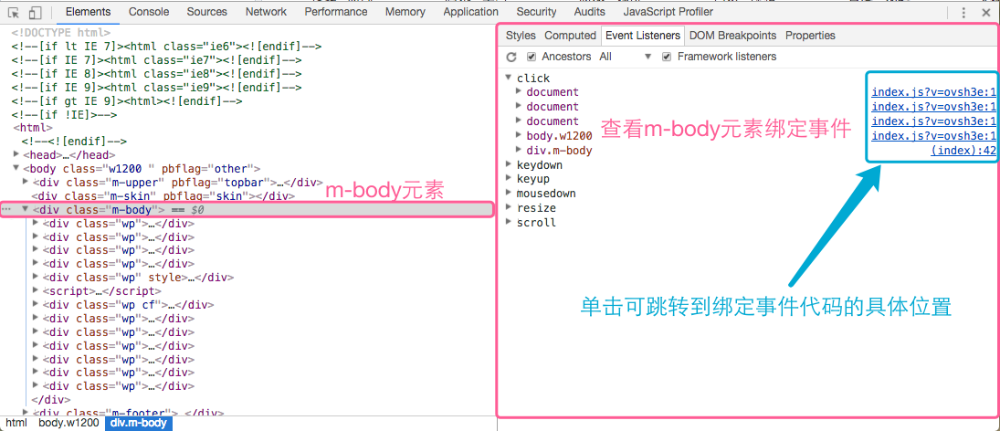
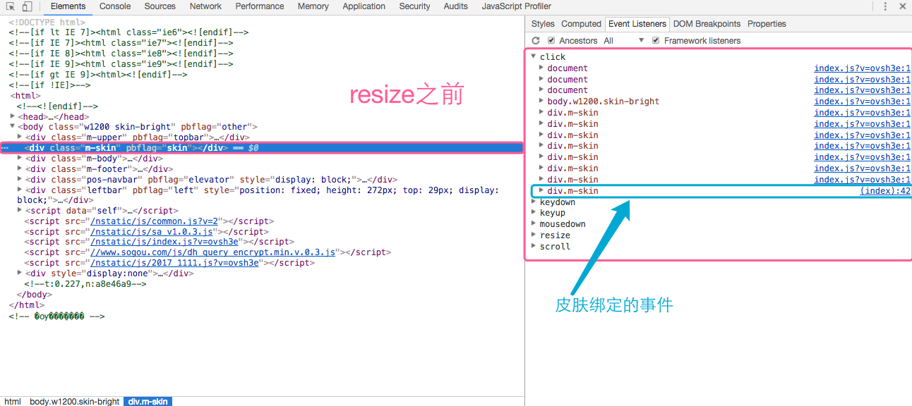
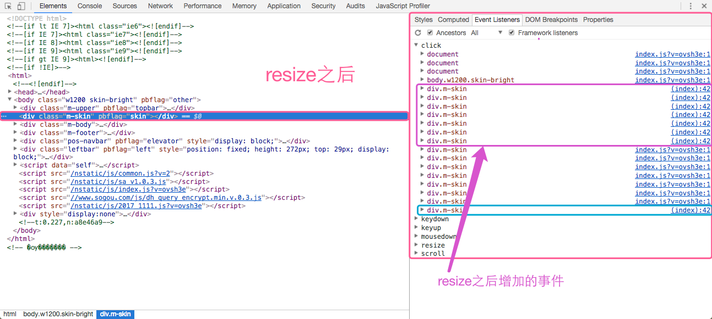
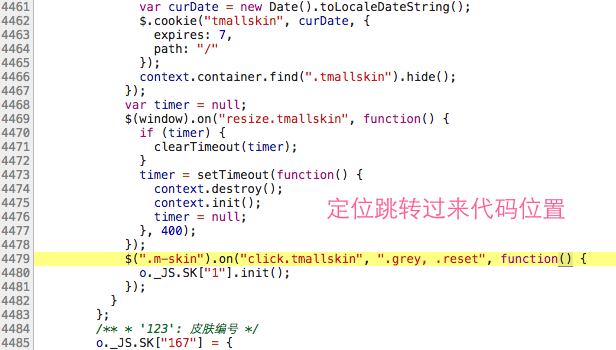
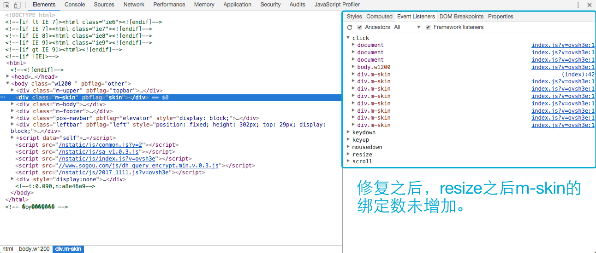

<!DOCTYPE html>
<html lang=zh>
<head>
    <!-- so meta -->
    <meta charset="utf-8">
    <meta http-equiv="X-UA-Compatible" content="IE=edge">
    <meta name="HandheldFriendly" content="True">
    <meta name="viewport" content="width=device-width, initial-scale=1, maximum-scale=1" />
    <meta name="description" content="页面中事件绑定数量会直接影响页面的整体运行性能，因为每个事件的回调处理函数都是一个对象，占用一定的内存。如果事件的绑定数量越多，内存也随之增加。另外，回调处理函数需要与DOM节点进行交互，而JS引擎独立于渲染引擎，而DOM是位于渲染引擎，相互访问需要消耗一定的资源。加上操作DOM，会引起浏览器的重排或重绘，而影响页面的整体性能。  事件代理 (事件委托) 利用了事件冒泡，只指定一个事件处理程序，就">
<meta name="keywords" content="内存泄露,优化,listeners">
<meta property="og:type" content="article">
<meta property="og:title" content="内存泄露之Listeners">
<meta property="og:url" content="http://123fe.com/2017/11/01/内存泄露之Listeners/index.html">
<meta property="og:site_name" content="Sogou.dh.fe">
<meta property="og:description" content="页面中事件绑定数量会直接影响页面的整体运行性能，因为每个事件的回调处理函数都是一个对象，占用一定的内存。如果事件的绑定数量越多，内存也随之增加。另外，回调处理函数需要与DOM节点进行交互，而JS引擎独立于渲染引擎，而DOM是位于渲染引擎，相互访问需要消耗一定的资源。加上操作DOM，会引起浏览器的重排或重绘，而影响页面的整体性能。  事件代理 (事件委托) 利用了事件冒泡，只指定一个事件处理程序，就">
<meta property="og:locale" content="zh-cn">
<meta property="og:image" content="http://123fe.com/2017/11/01/内存泄露之Listeners/listeners_performance.png">
<meta property="og:image" content="http://123fe.com/2017/11/01/内存泄露之Listeners/listeners_event.png">
<meta property="og:image" content="http://123fe.com/2017/11/01/内存泄露之Listeners/listeners_resize.png">
<meta property="og:image" content="http://123fe.com/2017/11/01/内存泄露之Listeners/listeners_resize_after.png">
<meta property="og:image" content="http://123fe.com/2017/11/01/内存泄露之Listeners/listener_location.png">
<meta property="og:image" content="http://123fe.com/2017/11/01/内存泄露之Listeners/listeners_fixed.png">
<meta property="og:updated_time" content="2018-08-22T08:06:45.000Z">
<meta name="twitter:card" content="summary">
<meta name="twitter:title" content="内存泄露之Listeners">
<meta name="twitter:description" content="页面中事件绑定数量会直接影响页面的整体运行性能，因为每个事件的回调处理函数都是一个对象，占用一定的内存。如果事件的绑定数量越多，内存也随之增加。另外，回调处理函数需要与DOM节点进行交互，而JS引擎独立于渲染引擎，而DOM是位于渲染引擎，相互访问需要消耗一定的资源。加上操作DOM，会引起浏览器的重排或重绘，而影响页面的整体性能。  事件代理 (事件委托) 利用了事件冒泡，只指定一个事件处理程序，就">
<meta name="twitter:image" content="http://123fe.com/2017/11/01/内存泄露之Listeners/listeners_performance.png">
    
    
        
          
              <link rel="shortcut icon" href="/images/favicon.ico">
          
        
        
          
            <link rel="icon" type="image/png" href="/images/favicon-192x192.png" sizes="192x192">
          
        
        
          
            <link rel="apple-touch-icon" sizes="180x180" href="/images/apple-touch-icon.png">
          
        
    
    <!-- title -->
    <title>内存泄露之Listeners</title>
    <!-- styles -->
    <link rel="stylesheet" href="/css/style.css">
    <!-- rss -->
    
    
</head>

<body>
    
      <div id="header-post">
  <a id="menu-icon" href="#"><i class="fa fa-bars fa-lg"></i></a>
  <a id="menu-icon-tablet" href="#"><i class="fa fa-bars fa-lg"></i></a>
  <a id="top-icon-tablet" href="#" onclick="$('html, body').animate({ scrollTop: 0 }, 'fast');" style="display:none;"><i class="fa fa-chevron-up fa-lg"></i></a>
  <span id="menu">
    <span id="nav">
      <ul>
         
          <li><a href="/">Home</a></li>
         
          <li><a href="https://github.com/sgdh-fe">Github</a></li>
         
          <li><a href="http://git.dh.sogou-inc.com/groups/fe">Projects</a></li>
         
          <li><a href="/about/">About</a></li>
        
      </ul>
    </span>
    <br/>
    <span id="actions">
      <ul>
        
        <li><a class="icon" href="/2017/11/10/IE-8循环引用导致的内存泄露/"><i class="fa fa-chevron-left" aria-hidden="true" onmouseover="$('#i-prev').toggle();" onmouseout="$('#i-prev').toggle();"></i></a></li>
        
        
        <li><a class="icon" href="/2017/09/30/JavaScript内存那点事/"><i class="fa fa-chevron-right" aria-hidden="true" onmouseover="$('#i-next').toggle();" onmouseout="$('#i-next').toggle();"></i></a></li>
        
        <li><a class="icon" href="#" onclick="$('html, body').animate({ scrollTop: 0 }, 'fast');"><i class="fa fa-chevron-up" aria-hidden="true" onmouseover="$('#i-top').toggle();" onmouseout="$('#i-top').toggle();"></i></a></li>
        <li><a class="icon" href="#"><i class="fa fa-share-alt" aria-hidden="true" onmouseover="$('#i-share').toggle();" onmouseout="$('#i-share').toggle();" onclick="$('#share').toggle();return false;"></i></a></li>
      </ul>
      <span id="i-prev" class="info" style="display:none;">Previous post</span>
      <span id="i-next" class="info" style="display:none;">Next post</span>
      <span id="i-top" class="info" style="display:none;">Back to top</span>
      <span id="i-share" class="info" style="display:none;">Share post</span>
    </span>
    <br/>
    <div id="share" style="display: none">
      <ul>
  <li><a class="icon" href="http://www.facebook.com/sharer.php?u=http://123fe.com/2017/11/01/内存泄露之Listeners/"><i class="fa fa-facebook " aria-hidden="true"></i></a></li>
  <li><a class="icon" href="https://twitter.com/share?url=http://123fe.com/2017/11/01/内存泄露之Listeners/&text=内存泄露之Listeners"><i class="fa fa-twitter " aria-hidden="true"></i></a></li>
  <li><a class="icon" href="http://www.linkedin.com/shareArticle?url=http://123fe.com/2017/11/01/内存泄露之Listeners/&title=内存泄露之Listeners"><i class="fa fa-linkedin " aria-hidden="true"></i></a></li>
  <li><a class="icon" href="https://pinterest.com/pin/create/bookmarklet/?url=http://123fe.com/2017/11/01/内存泄露之Listeners/&is_video=false&description=内存泄露之Listeners"><i class="fa fa-pinterest " aria-hidden="true"></i></a></li>
  <li><a class="icon" href="mailto:?subject=内存泄露之Listeners&body=Check out this article: http://123fe.com/2017/11/01/内存泄露之Listeners/"><i class="fa fa-envelope " aria-hidden="true"></i></a></li>
  <li><a class="icon" href="https://getpocket.com/save?url=http://123fe.com/2017/11/01/内存泄露之Listeners/&title=内存泄露之Listeners"><i class="fa fa-get-pocket " aria-hidden="true"></i></a></li>
  <li><a class="icon" href="http://reddit.com/submit?url=http://123fe.com/2017/11/01/内存泄露之Listeners/&title=内存泄露之Listeners"><i class="fa fa-reddit " aria-hidden="true"></i></a></li>
  <li><a class="icon" href="http://www.stumbleupon.com/submit?url=http://123fe.com/2017/11/01/内存泄露之Listeners/&title=内存泄露之Listeners"><i class="fa fa-stumbleupon " aria-hidden="true"></i></a></li>
  <li><a class="icon" href="http://digg.com/submit?url=http://123fe.com/2017/11/01/内存泄露之Listeners/&title=内存泄露之Listeners"><i class="fa fa-digg " aria-hidden="true"></i></a></li>
  <li><a class="icon" href="http://www.tumblr.com/share/link?url=http://123fe.com/2017/11/01/内存泄露之Listeners/&name=内存泄露之Listeners&description="><i class="fa fa-tumblr " aria-hidden="true"></i></a></li>
</ul>

    </div>
    <div id="toc">
      <ol class="toc"><li class="toc-item toc-level-2"><a class="toc-link" href="#DevTools"><span class="toc-number">1.</span> <span class="toc-text">DevTools</span></a><ol class="toc-child"><li class="toc-item toc-level-3"><a class="toc-link" href="#如何判断页面的事件绑定数量在增加："><span class="toc-number">1.1.</span> <span class="toc-text">如何判断页面的事件绑定数量在增加：</span></a></li><li class="toc-item toc-level-3"><a class="toc-link" href="#如何定位事件绑定数量的增加："><span class="toc-number">1.2.</span> <span class="toc-text">如何定位事件绑定数量的增加：</span></a></li></ol></li><li class="toc-item toc-level-2"><a class="toc-link" href="#实战"><span class="toc-number">2.</span> <span class="toc-text">实战</span></a><ol class="toc-child"><li class="toc-item toc-level-3"><a class="toc-link" href="#知道问题的原因，修复代码如下："><span class="toc-number">2.1.</span> <span class="toc-text">知道问题的原因，修复代码如下：</span></a></li></ol></li><li class="toc-item toc-level-2"><a class="toc-link" href="#总结"><span class="toc-number">3.</span> <span class="toc-text">总结</span></a></li></ol>
    </div>
  </span>
</div>

    
    <div class="content index width mx-auto px2 my4">
        
        <article class="post" itemscope itemtype="http://schema.org/BlogPosting">
  <header>
    
    <h1 class="posttitle" itemprop="name headline">
        内存泄露之Listeners
    </h1>


    <div class="meta">
      <span class="author" itemprop="author" itemscope itemtype="http://schema.org/Person">
        <span itemprop="name">singsong</span>
      </span>
      
    <div class="postdate">
        <time datetime="2017-11-01T04:59:04.000Z" itemprop="datePublished">2017-11-01</time>
    </div>


      
    <div class="article-tag">
        <i class="fa fa-tag"></i>
        <a class="tag-link" href="/tags/listeners/">listeners</a>, <a class="tag-link" href="/tags/优化/">优化</a>, <a class="tag-link" href="/tags/内存泄露/">内存泄露</a>
    </div>


    </div>
  </header>
  

  <div class="content" itemprop="articleBody">
    <p>页面中事件绑定数量会直接影响页面的整体运行性能，因为每个事件的回调处理函数都是一个对象，占用一定的内存。如果事件的绑定数量越多，内存也随之增加。另外，回调处理函数需要与DOM节点进行交互，而JS引擎独立于渲染引擎，而DOM是位于渲染引擎，相互访问需要消耗一定的资源。加上操作DOM，会引起浏览器的重排或重绘，而影响页面的整体性能。</p>
<blockquote>
<p>事件代理 (事件委托) 利用了事件冒泡，只指定一个事件处理程序，就可以管理某一类型的所有事件。</p>
</blockquote>
<p>因此如何控制事件绑定数量就很重要了，通常都是通过事件代理（事件委托）来解决类似的问题。不过有时借助了事件代理（事件委托），而页面的事件绑定数量也在不断地增加？这可能是某些“不好”代码导致的，那如何定位增加的原因就显得很关键了。这里可以通过chrome的<strong>DevTools</strong>来辅助诊断。</p>
<h2 id="DevTools"><a href="#DevTools" class="headerlink" title="DevTools"></a>DevTools</h2><h3 id="如何判断页面的事件绑定数量在增加："><a href="#如何判断页面的事件绑定数量在增加：" class="headerlink" title="如何判断页面的事件绑定数量在增加："></a>如何判断页面的事件绑定数量在增加：</h3><ol>
<li>打开DevTools-&gt;Performance，单击【记录按钮】开始记录页面相关performance数据。接着单击【垃圾回收按钮】，进行一次垃圾回收，创建基准参考线。</li>
<li>进行可能引起事件绑定数量增加的操作。</li>
<li>单击【stop】按钮，停止记录。</li>
</ol>
<p></p>
<h3 id="如何定位事件绑定数量的增加："><a href="#如何定位事件绑定数量的增加：" class="headerlink" title="如何定位事件绑定数量的增加："></a>如何定位事件绑定数量的增加：</h3><ol>
<li>打开DevTools-&gt;Elements，查看页面中绑定事件的元素。</li>
</ol>
<p></p>
<h2 id="实战"><a href="#实战" class="headerlink" title="实战"></a>实战</h2><p>双十一快到了，各种tmall活动就多起来了。在做一个tmall动态皮肤时，需要在window大小变化时将之前构建的结构销毁，然后再重新计算构建。因为在销毁时，未解绑对应的事件。导致在window触发resize时，某个元素的事件绑定数量不断增加。关键代码如下：</p>
<figure class="highlight js"><table><tr><td class="gutter"><pre><div class="line">1</div><div class="line">2</div><div class="line">3</div><div class="line">4</div><div class="line">5</div><div class="line">6</div><div class="line">7</div><div class="line">8</div><div class="line">9</div><div class="line">10</div><div class="line">11</div><div class="line">12</div><div class="line">13</div><div class="line">14</div><div class="line">15</div><div class="line">16</div><div class="line">17</div><div class="line">18</div><div class="line">19</div><div class="line">20</div><div class="line">21</div><div class="line">22</div><div class="line">23</div><div class="line">24</div><div class="line">25</div><div class="line">26</div><div class="line">27</div><div class="line">28</div><div class="line">29</div><div class="line">30</div><div class="line">31</div><div class="line">32</div><div class="line">33</div><div class="line">34</div><div class="line">35</div><div class="line">36</div></pre></td><td class="code"><pre><div class="line"><span class="keyword">var</span> tmallskin = &#123;</div><div class="line">  init: <span class="function"><span class="keyword">function</span>(<span class="params"></span>) </span>&#123;</div><div class="line">    <span class="comment">//......</span></div><div class="line">    <span class="keyword">this</span>.bindEvent();</div><div class="line">  &#125;,</div><div class="line">  destroy: <span class="function"><span class="keyword">function</span>(<span class="params"></span>) </span>&#123;</div><div class="line">    <span class="keyword">if</span> (<span class="keyword">this</span>.element.length &gt; <span class="number">0</span>) &#123;</div><div class="line">      <span class="keyword">this</span>.container.off(<span class="string">"click.tmallskin"</span>);<span class="comment">//该语句可以不用，因为在element.remove时会解除element上绑定的事件</span></div><div class="line">      <span class="keyword">this</span>.element.remove();</div><div class="line">    &#125;</div><div class="line">  &#125;</div><div class="line"> <span class="comment">// 绑定逻辑</span></div><div class="line"> bindEvent: <span class="function"><span class="keyword">function</span>(<span class="params"></span>) </span>&#123;</div><div class="line">    <span class="keyword">var</span> context = <span class="keyword">this</span>;</div><div class="line">    <span class="keyword">this</span>.container.on(<span class="string">"click.tmallskin"</span>, <span class="string">".tmallskin-close"</span>,<span class="function"><span class="keyword">function</span>(<span class="params"></span>) </span>&#123;</div><div class="line">      <span class="comment">//.... </span></div><div class="line">    &#125;);</div><div class="line"></div><div class="line">    <span class="keyword">var</span> timer = <span class="literal">null</span>;</div><div class="line">    $(<span class="built_in">window</span>).on(<span class="string">"resize.tmallskin"</span>, <span class="function"><span class="keyword">function</span>(<span class="params"></span>) </span>&#123;</div><div class="line">      <span class="keyword">if</span> (timer) &#123;</div><div class="line">        clearTimeout(timer);</div><div class="line">      &#125;</div><div class="line">      timer = setTimeout(<span class="function"><span class="keyword">function</span>(<span class="params"></span>) </span>&#123;</div><div class="line">        <span class="comment">// 窗口大小变化时，会不断执行destroy，init</span></div><div class="line">        context.destroy();</div><div class="line">        context.init();</div><div class="line">        timer = <span class="literal">null</span>;</div><div class="line">      &#125;, <span class="number">400</span>);</div><div class="line">    &#125;);</div><div class="line">    <span class="comment">// 因为未在destroy中解除该绑定，在window触发resize时，会不断地绑定</span></div><div class="line">    $(<span class="string">".m-skin"</span>).on(<span class="string">"click.tmallskin"</span>, <span class="string">".grey, .reset"</span>, <span class="function"><span class="keyword">function</span>(<span class="params"></span>) </span>&#123;</div><div class="line">      o._JS.SK[<span class="string">"1"</span>].init();</div><div class="line">    &#125;);</div><div class="line">  &#125;</div><div class="line">&#125;;</div></pre></td></tr></table></figure>
<p>上述code中，因为在destroy方法中未对<code>$(&quot;.m-skin&quot;)</code>元素上绑定的事件进行解除，导致在window触发resize时，不断进行绑定。</p>
<ul>
<li>DevTools诊断截图如下：</li>
</ul>
<p></p>
<ul>
<li>resize之后：</li>
</ul>
<p></p>
<ul>
<li>单击右侧定位链接<code>(index):42</code>：</li>
</ul>
<p></p>
<h3 id="知道问题的原因，修复代码如下："><a href="#知道问题的原因，修复代码如下：" class="headerlink" title="知道问题的原因，修复代码如下："></a>知道问题的原因，修复代码如下：</h3><figure class="highlight js"><table><tr><td class="gutter"><pre><div class="line">1</div><div class="line">2</div><div class="line">3</div><div class="line">4</div><div class="line">5</div><div class="line">6</div><div class="line">7</div><div class="line">8</div><div class="line">9</div><div class="line">10</div></pre></td><td class="code"><pre><div class="line"><span class="comment">//.....</span></div><div class="line">destroy: <span class="function"><span class="keyword">function</span>(<span class="params"></span>) </span>&#123;</div><div class="line">  <span class="keyword">if</span> (<span class="keyword">this</span>.element.length &gt; <span class="number">0</span>) &#123;</div><div class="line">    <span class="keyword">this</span>.container.off(<span class="string">"click.tmallskin"</span>);</div><div class="line">    $(<span class="string">".m-skin"</span>).off(<span class="string">"click.tmallskin"</span>);<span class="comment">//销毁时解除绑定</span></div><div class="line">    $(<span class="built_in">window</span>).off(<span class="string">"resize.tmallskin"</span>);</div><div class="line">    <span class="keyword">this</span>.element.remove();</div><div class="line">  &#125;</div><div class="line">&#125;,</div><div class="line"><span class="comment">//.....</span></div></pre></td></tr></table></figure>
<p>效果截图：</p>
<p></p>
<h2 id="总结"><a href="#总结" class="headerlink" title="总结"></a>总结</h2><p>可能在实践编码中，很少关注主动解除事件绑定。如常用的Jquery库，会在元素删除时，自动解除元素上绑定的事件。不过难免存在某些情况，Jquery也无能无力，这时需要我们主动进行解绑，因为过多的事件绑定会直接影响页面的整体性能。因此了解如何诊断事件绑定的增加是很重要的，也希望本文对你有所帮助。</p>

  </div>
</article>


    </div>
    
      <div id="footer-post-container">
  <div id="footer-post">

    <div id="nav-footer" style="display: none">
      <ul>
         
          <li><a href="/">Home</a></li>
         
          <li><a href="https://github.com/sgdh-fe">Github</a></li>
         
          <li><a href="http://git.dh.sogou-inc.com/groups/fe">Projects</a></li>
         
          <li><a href="/about/">About</a></li>
        
      </ul>
    </div>

    <div id="toc-footer" style="display: none">
      <ol class="toc"><li class="toc-item toc-level-2"><a class="toc-link" href="#DevTools"><span class="toc-number">1.</span> <span class="toc-text">DevTools</span></a><ol class="toc-child"><li class="toc-item toc-level-3"><a class="toc-link" href="#如何判断页面的事件绑定数量在增加："><span class="toc-number">1.1.</span> <span class="toc-text">如何判断页面的事件绑定数量在增加：</span></a></li><li class="toc-item toc-level-3"><a class="toc-link" href="#如何定位事件绑定数量的增加："><span class="toc-number">1.2.</span> <span class="toc-text">如何定位事件绑定数量的增加：</span></a></li></ol></li><li class="toc-item toc-level-2"><a class="toc-link" href="#实战"><span class="toc-number">2.</span> <span class="toc-text">实战</span></a><ol class="toc-child"><li class="toc-item toc-level-3"><a class="toc-link" href="#知道问题的原因，修复代码如下："><span class="toc-number">2.1.</span> <span class="toc-text">知道问题的原因，修复代码如下：</span></a></li></ol></li><li class="toc-item toc-level-2"><a class="toc-link" href="#总结"><span class="toc-number">3.</span> <span class="toc-text">总结</span></a></li></ol>
    </div>

    <div id="share-footer" style="display: none">
      <ul>
  <li><a class="icon" href="http://www.facebook.com/sharer.php?u=http://123fe.com/2017/11/01/内存泄露之Listeners/"><i class="fa fa-facebook fa-lg" aria-hidden="true"></i></a></li>
  <li><a class="icon" href="https://twitter.com/share?url=http://123fe.com/2017/11/01/内存泄露之Listeners/&text=内存泄露之Listeners"><i class="fa fa-twitter fa-lg" aria-hidden="true"></i></a></li>
  <li><a class="icon" href="http://www.linkedin.com/shareArticle?url=http://123fe.com/2017/11/01/内存泄露之Listeners/&title=内存泄露之Listeners"><i class="fa fa-linkedin fa-lg" aria-hidden="true"></i></a></li>
  <li><a class="icon" href="https://pinterest.com/pin/create/bookmarklet/?url=http://123fe.com/2017/11/01/内存泄露之Listeners/&is_video=false&description=内存泄露之Listeners"><i class="fa fa-pinterest fa-lg" aria-hidden="true"></i></a></li>
  <li><a class="icon" href="mailto:?subject=内存泄露之Listeners&body=Check out this article: http://123fe.com/2017/11/01/内存泄露之Listeners/"><i class="fa fa-envelope fa-lg" aria-hidden="true"></i></a></li>
  <li><a class="icon" href="https://getpocket.com/save?url=http://123fe.com/2017/11/01/内存泄露之Listeners/&title=内存泄露之Listeners"><i class="fa fa-get-pocket fa-lg" aria-hidden="true"></i></a></li>
  <li><a class="icon" href="http://reddit.com/submit?url=http://123fe.com/2017/11/01/内存泄露之Listeners/&title=内存泄露之Listeners"><i class="fa fa-reddit fa-lg" aria-hidden="true"></i></a></li>
  <li><a class="icon" href="http://www.stumbleupon.com/submit?url=http://123fe.com/2017/11/01/内存泄露之Listeners/&title=内存泄露之Listeners"><i class="fa fa-stumbleupon fa-lg" aria-hidden="true"></i></a></li>
  <li><a class="icon" href="http://digg.com/submit?url=http://123fe.com/2017/11/01/内存泄露之Listeners/&title=内存泄露之Listeners"><i class="fa fa-digg fa-lg" aria-hidden="true"></i></a></li>
  <li><a class="icon" href="http://www.tumblr.com/share/link?url=http://123fe.com/2017/11/01/内存泄露之Listeners/&name=内存泄露之Listeners&description="><i class="fa fa-tumblr fa-lg" aria-hidden="true"></i></a></li>
</ul>

    </div>

    <div id="actions-footer">
      <ul>
        <li id="toc"><a class="icon" href="#" onclick="$('#toc-footer').toggle();return false;"><i class="fa fa-list fa-lg" aria-hidden="true"></i> TOC</a></li>
        <li id="share"><a class="icon" href="#" onclick="$('#share-footer').toggle();return false;"><i class="fa fa-share-alt fa-lg" aria-hidden="true"></i> Share</a></li>
        <li id="top" style="display:none"><a class="icon" href="#" onclick="$('html, body').animate({ scrollTop: 0 }, 'fast');"><i class="fa fa-chevron-up fa-lg" aria-hidden="true"></i> Top</a></li>
        <li id="menu"><a class="icon" href="#" onclick="$('#nav-footer').toggle();return false;"><i class="fa fa-bars fa-lg" aria-hidden="true"></i> Menu</a></li>
      </ul>
    </div>

  </div>
</div>

    
    <footer id="footer">
  <div class="footer-left">
    Copyright &copy; 2018 sgdhfe
  </div>
  <div class="footer-right">
    <nav>
      <ul>
         
          <li><a href="/">Home</a></li>
         
          <li><a href="https://github.com/sgdh-fe">Github</a></li>
         
          <li><a href="http://git.dh.sogou-inc.com/groups/fe">Projects</a></li>
         
          <li><a href="/about/">About</a></li>
        
      </ul>
    </nav>
  </div>
</footer>

</body>
</html>
<!-- styles -->
<link rel="stylesheet" href="/lib/font-awesome/css/font-awesome.min.css">
<link rel="stylesheet" href="/lib/meslo-LG/styles.css">
<link rel="stylesheet" href="/lib/justified-gallery/justifiedGallery.min.css">


<!-- jquery -->
<script src="/lib/jquery/jquery.min.js"></script>
<script src="/lib/justified-gallery/jquery.justifiedGallery.min.js"></script>
<script src="/js/main.js"></script>
<!-- Google Analytics -->

    <script type="text/javascript">
        (function(i,s,o,g,r,a,m) {i['GoogleAnalyticsObject']=r;i[r]=i[r]||function() {
        (i[r].q=i[r].q||[]).push(arguments)},i[r].l=1*new Date();a=s.createElement(o),
        m=s.getElementsByTagName(o)[0];a.async=1;a.src=g;m.parentNode.insertBefore(a,m)
        })(window,document,'script','//www.google-analytics.com/analytics.js','ga');
        ga('create', 'UA-86660611-1', 'auto');
        ga('send', 'pageview');
    </script>

<!-- Disqus Comments -->


